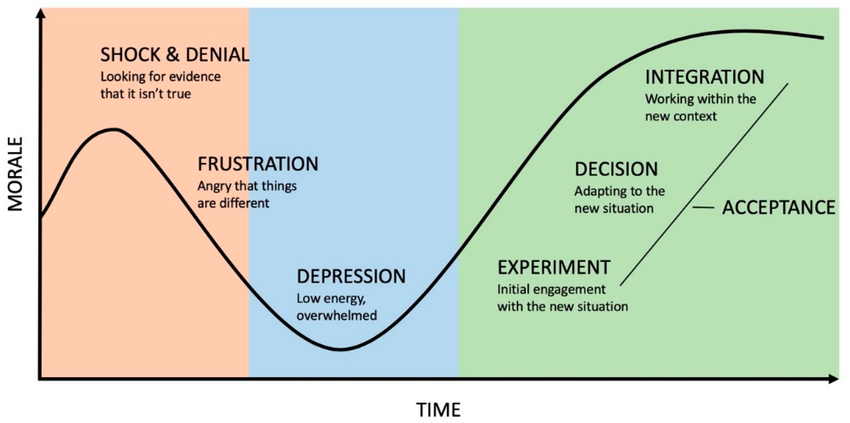

Introducing Tablelu Labs ( )
Sep 05, 2024
Your newsletter companion.
I mainly started this firm since the surplus of AI content creators or models, similar to the days when coding was introducted the amount of quality is drastically reducing. While the quantity is increasing. One of the main goals to produce the best models.
Open AI researcher - CHATGPT - Human like proecessing text to imange based processing NLP framework based on neurogenesis engine/p>
I believe in making the world a better place for everyone at the end of the day.
linkedinYoutube